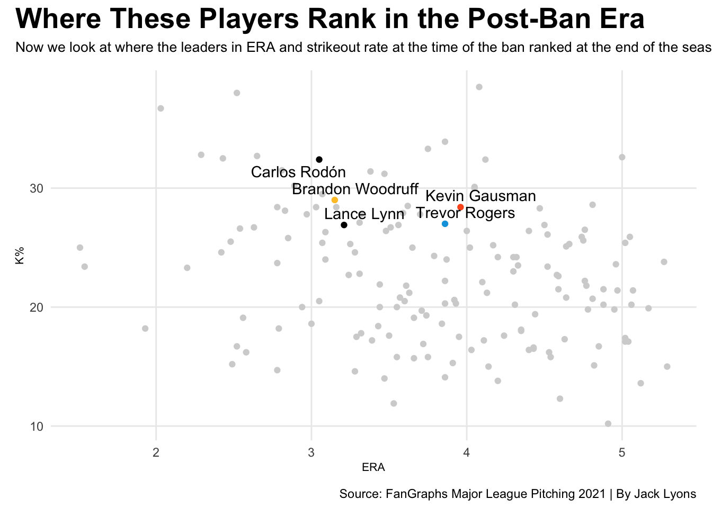
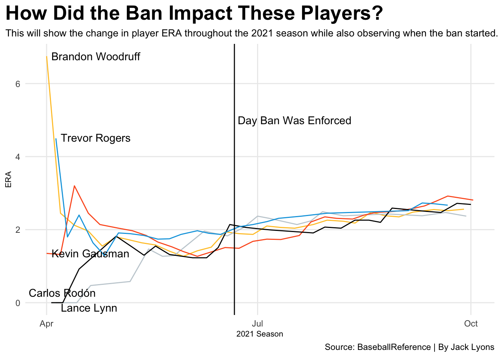

Beyond the Ban: Analyzing the Statistical Shift of MLB’s Top Pitchers in 2021
baseball
pitching
mlb
Author
Jack Lyons
Published
December 5, 2025
Looking back at the 2021 MLB season and the ban on foreign substances, we see through statistics that pitching dominance, which had been happening for years before this decision, declined throughout the season while overall offense reached new highs. While we see these statistics on paper, the question remains, which players were the most affected by the substance ban.
To try and answer this question, we examine the leaders in ERA on June 21st of that season, which is the day the ban was officially enforced. Looking at this should give an understanding of which pitchers were statistically some of the most dominant during that time frame.
Code
library(tidyverse)library(ggrepel)library(gt)library(patchwork)library(ggalt)library(lubridate)playerera <-read_csv("Pre Ban ERA leaders 2021.csv")postera <-read_csv("Post Ban ERA leaders 2021.csv") |>mutate(`K%`=gsub("%","", `K%`), `K%`=as.numeric(`K%`))BW <-read_csv("Brandon Woodruff 2021 Starts Data.csv") |>mutate(Date =ymd(Date), Player ="Brandon Woodruff")CR <-read_csv("Carlos Rodon 2021 Starts.csv") |>mutate(Date =ymd(Date), Player ="Carlos Rodón")KG <-read_csv("Kevin Gausman 2021 Starts.csv") |>mutate(Date =ymd(Date), Player ="Kevin Gausman")LL <-read_csv("Lance Lynn 2021 Starts.csv") |>mutate(Date =ymd(Date), Player ="Lance Lynn")TR <-read_csv("Trevor Rodgers 2021 Starts.csv") |>mutate(Date =ymd(Date), Player ="Trevor Rogers")player <- playerera |>select(Name, ERA, `K%` ,`BB%`, `HR/9`) |>gt() |>tab_header(title ="Who Where the Best Pitchers in Baseball Before the Ban?",subtitle ="These qualified pitchers had the lowest ERA in baseball as of June 21st, 2021, when the ban was enforced." ) |>tab_style(style =cell_text(color ="black", weight ="bold", align ="left"),locations =cells_title("title") ) |>tab_style(style =cell_text(color ="black", align ="left"),locations =cells_title("subtitle") ) |>tab_style(locations =cells_column_labels(columns =everything()),style =list(cell_borders(sides ="bottom", weight =px(3)),cell_text(weight ="bold", size=12) ) ) |>opt_row_striping() |>opt_table_lines("none") |>tab_source_note(source_note =md("**By:** Jack Lyons | **Source:** FanGraphs Major League Pitching 2021") ) |>tab_style(style =list(cell_fill(color ="#FF5910"),cell_text(color ="white") ),locations =cells_body(rows = Name =="Jacob deGrom") )player
Who Where the Best Pitchers in Baseball Before the Ban?
These qualified pitchers had the lowest ERA in baseball as of June 21st, 2021, when the ban was enforced.
Name
ERA
K%
BB%
HR/9
Jacob deGrom
0.50
46.80%
4.00%
0.38
Kevin Gausman
1.51
30.50%
5.60%
0.60
Carlos Rodón
1.83
36.60%
7.00%
0.73
Trevor Rogers
1.87
29.70%
8.10%
0.44
Brandon Woodruff
1.94
30.70%
5.70%
0.82
Lance Lynn
2.14
28.10%
6.90%
0.95
By: Jack Lyons | Source: FanGraphs Major League Pitching 2021
Jacob deGrom led all of baseball in ERA by a significant margin before the ban was enforced. However, while he stands out in this category, his season was cut short as he went on the IL for Tommy John surgery shortly after June 21st. Therefore, removing him from the list, we are left with five pitchers who all lead baseball in these categories.
We now have Kevin Gausman, Carlos Rodón, Trevor Rogers, Brandon Woodruff, and Lance Lynn as our standout pitchers to track throughout the 2021 season. By doing this, we can see the change in ERA in the post-ban era and compare it to all the other pitchers who thrived in that period.
Code
newpost <- postera |>filter(ERA <5.3)newbw <- postera |>filter(Name =="Brandon Woodruff")newcr <- postera |>filter(Name =="Carlos Rodón")newkg <- postera |>filter(Name =="Kevin Gausman")newll <- postera |>filter(Name =="Lance Lynn")newtr <- postera |>filter(Name =="Trevor Rogers")ggplot() +geom_point(data=newpost, aes(x= ERA, y=`K%`), color="lightgrey")+geom_point(data=newbw, aes(x= ERA, y=`K%`), color="#FFC52F")+geom_point(data=newcr, aes(x= ERA, y=`K%`), color="black")+geom_point(data=newkg, aes(x= ERA, y=`K%`), color="#FD5A1E")+geom_point(data=newll, aes(x= ERA, y=`K%`), color="black")+geom_point(data=newtr, aes(x= ERA, y=`K%`), color="#00A3E0")+geom_text_repel(data=newbw, aes(x=ERA, y=`K%`, group=Team, label="Brandon Woodruff" )) +geom_text_repel(data=newcr, aes(x=ERA, y=`K%`, label="Carlos Rodón" )) +geom_text_repel(data=newkg, aes(x=ERA, y=`K%`, label="Kevin Gausman" )) +geom_text_repel(data=newll, aes(x=ERA, y=`K%`, label="Lance Lynn" )) +geom_text_repel(data=newtr, aes(x=ERA, y=`K%`, label="Trevor Rogers" )) +theme_minimal() +theme(plot.title =element_text(size =20, face ="bold"),axis.title =element_text(size =8), plot.subtitle =element_text(size=10), panel.grid.minor =element_blank() ) +plot_annotation(title ="Where These Players Rank in the Post-Ban Era",subtitle ="Now we look at where the leaders in ERA and strikeout rate at the time of the ban ranked at the end of the season.",caption ="Source: FanGraphs Major League Pitching 2021 | By Jack Lyons" ) &theme(plot.title =element_text(size =20, face ="bold"),axis.title =element_text(size =8), plot.subtitle =element_text(size=10), panel.grid.minor =element_blank() )

We can see how these pitchers compare to the rest of baseball in ERA and strikeout rate during the post-ban era. For the most part, there are no significant changes. However, Kevin Gausman and Trevor Rogers have higher ERAs than the other pitchers we’ve observed during that period.
Gausman had a 3.96 ERA in the post-ban era, while Rogers had a 3.86. Similar to their ERA change, their K% declined during the post-ban period. Gausman’s strikeout rate was 28.4%, and Rogers’ was 27%, both around a 2% decrease from their pre-ban K%.
But, is this a similar story to the other pitchers who stood out in the pre-ban period?
Code
bwlabel <- BW |>slice(1)crlabel <- CR |>slice(1)kglabel <- KG |>slice(1)lllabel <- LL |>slice(1)trlabel <- TR |>slice(1)labels <-bind_rows(bwlabel, crlabel, kglabel,lllabel, trlabel)ggplot() +geom_line(data= BW, aes(x=Date, y=ERA), color="#FFC52F")+geom_line(data= CR, aes(x=Date, y=ERA), color="#C4CED4")+geom_line(data= KG, aes(x=Date, y=ERA), color="#FD5A1E")+geom_line(data= LL, aes(x=Date, y=ERA), color="black")+geom_line(data= TR, aes(x=Date, y=ERA), color="#00A3E0")+geom_vline(xintercept =as.Date("2021-06-21"), color="black") +geom_text_repel(data=labels, aes(x=Date, y=ERA, group=Team, label= Player)) +geom_text(aes(x=as.Date("2021-07-17"), y=5, label="Day Ban Was Enforced")) +labs(title="How Did the Ban Impact These Players?",subtitle ="This will show the change in player ERA throughout the 2021 season while also observing when the ban started.",x="2021 Season",y="ERA",caption="Source: BaseballReference | By Jack Lyons" ) +theme_minimal() +theme(plot.title =element_text(size =20, face ="bold"),axis.title =element_text(size =8), plot.subtitle =element_text(size=10),panel.grid.minor =element_blank(),plot.title.position ="plot" )

Notice that these pitchers all hover around the same ERA during the season, but their ERAs gradually go up after the ban on foreign substances. Is that just a coincidence and the result of a long season with many ups and downs? Or did the ban on sticky stuff genuinely affect these pitchers?
We may never know whether the ban directly affected these players; however, analyzing these datasets and other pitching statistics reveals a noticeable change in top-level pitchers following MLB’s enforcement of the ban.